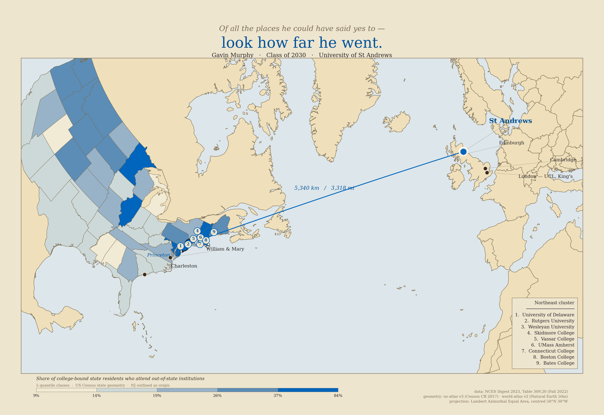
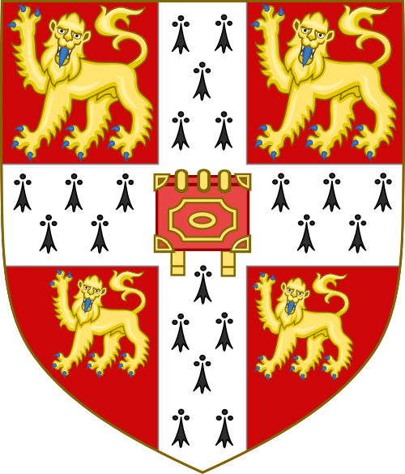
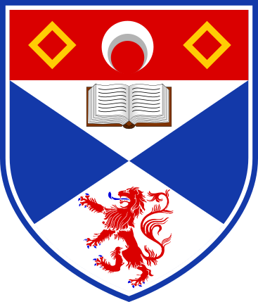
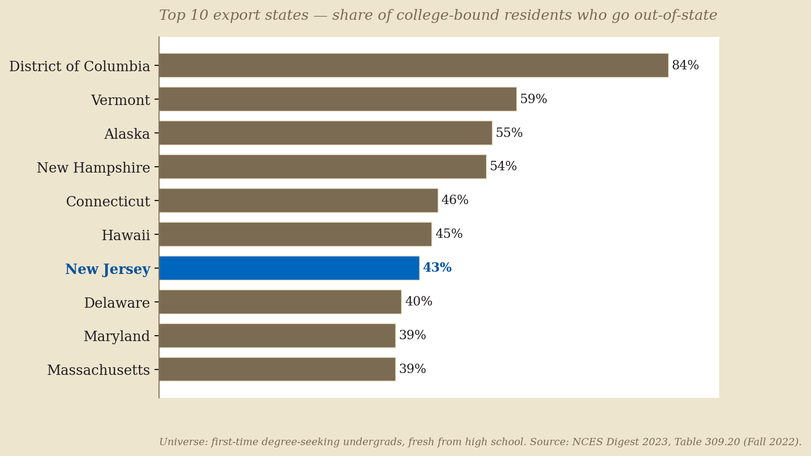
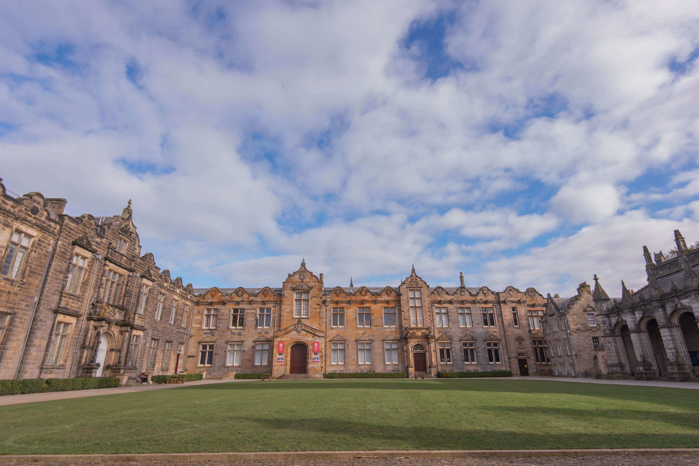
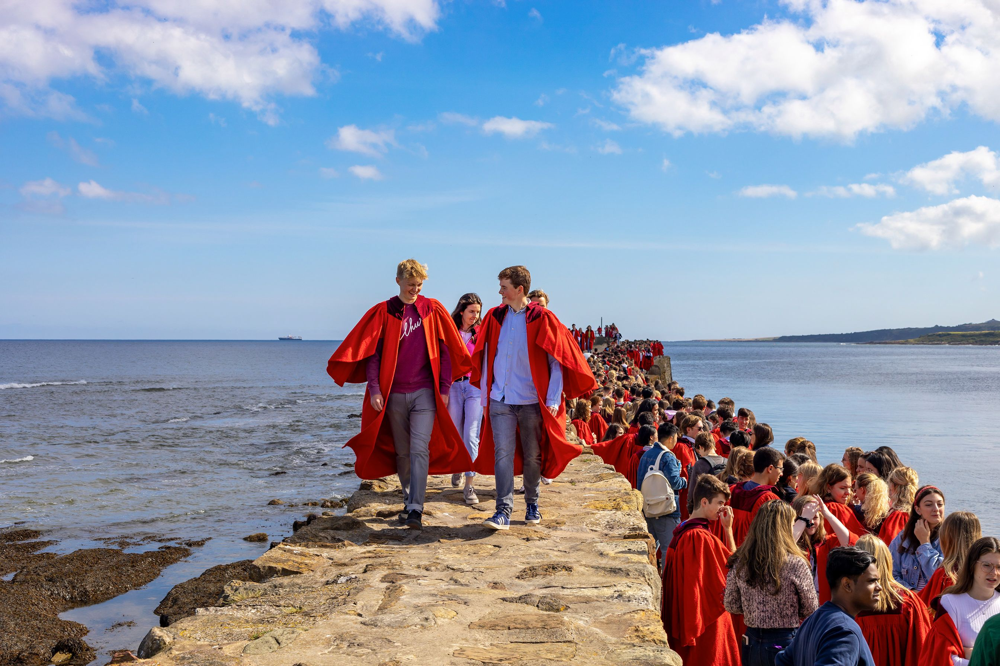

How an announcement card grew out of a real geography problem.
I started with the announcement — an illustrated atlas card flipped to reveal photographs and details. It had to feel like a keepsake. But under the imagery, the geography is real: a high-export state, sixteen schools that said yes, and one that's a five-thousand-kilometre crossing away. So I made both versions of the same map.
The card opens with a question — where will Gavin go next? The data map answers it — further than almost anywhere else in his year would. This is what's between the two.
Designed first, built second
Both pages tell the same story but from opposite ends. The card is what you give to family and friends — warm, illustrated, animated when you tap it. The data map is what you give to the part of yourself that wants to know the answer is real.

Sixteen acceptances
Sixteen schools said yes. Each is a real letter, a real visit, a real version of the next four years. Fifteen of them turned into a polite no, thank you. One of them turned into an answer.




What's real, what's stylised
The card takes deliberate licence. The map doesn't. Holding both up next to each other made the licence-taking visible to me in ways I didn't expect — design decisions I'd been making by feel turned out to be tradable, and I could pick.
pyproj.Geod.npts on the WGS84 ellipsoid. The northward arc is geometric truth.The pipeline
Both pages share the same data spine. The card was built from the data; the data map was built from the same data. Nothing about the underlying analysis is duplicated.
What the data actually says
The choropleth's claim is that New Jersey is unusual — a high-export state, where a meaningful share of college-bound graduates leave to attend school somewhere else. The card hints at this with the line crossing the ocean. The map proves it with the colour ramp. Here's the receipt.

NJ is seventh, behind DC (a special case), Vermont, Alaska, New Hampshire, Connecticut, and Hawaii. Among states with five-million-plus residents, it's near the top. Big states like Texas and California sit at 14% — most of their college-bound students stay home. New Jersey's are wired differently.
Welcome to St Andrews
The card holds the photographs of the place. The data map gets you there. Here's some of what's waiting on the other end of that 5,340-km arc.


Source files & code
Everything that produced these pages is in the repo. The pipeline runs end-to-end from a clean checkout — same scripts, same data, same outputs — which is the point of doing it this way instead of clicking around in QGIS by hand.
Data
- NCES Digest Table 309.20 migration share, Fall 2022
- us-atlas v3 state polygons (Census CB 2017)
- world-atlas v2 country polygons (Natural Earth 50m)
- schools.csv accepted schools, geocoded by hand
Code
- gsmurphy/gavin-college-decision repo (card + map + this page)
- scripts/theme.py palette, fonts
- scripts/data.py load + topojson decode
- scripts/distances.py pyproj geodesic helpers
- scripts/print_map.py matplotlib renderer
- scripts/web_map.py Folium / Leaflet renderer
- scripts/bar_chart.py top-10 export states
Outputs
- Interactive web map click to explore
- Print PDF portfolio-quality, 16×11
- Print PNG screen preview
{kind=link}